Ray::Camera::getRay():
This function returns the ray that leaves the camera and goes through pixel (i,j) of the view plane.
Ray::ShapeList::processFirstIntersection():
This method processes the first shape which intersect the ray within the prescribed range and passing the rFilter test,
invoking the rKernel kernel with the intersection information. The function returns true if there was an intersection.
For the naive brute force implementation, I simply looped through all the shapes in the list and utilized a local kernel to check if the
new intersection is closer to the camera by comparing
the new intersection with a stored minial intersection. If so, the intersection information will be updated.
After looping through ShapeList, the stored minimal intersection will be used to trigger the rKernel if the intersection is within the range.
Ray::Sphere::processFirstInersection():
This method processes the first shape which intersect the ray within the prescribed range and passing the rFilter test,
invoking the rKernel kernel with the intersection information. The function returns true if there was an intersection.
To implement this, I used the implicit polynomial of the sphere to solve the intersection roots. The first positive root is the first intersection point, then the intersection info is setup and the kernel is called.
| 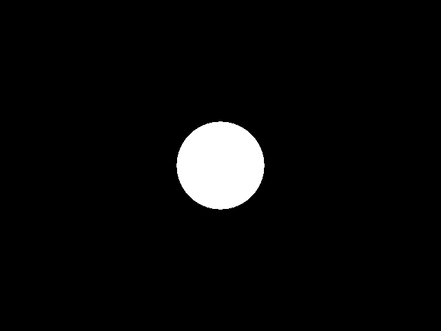 |
Using white for the GetColor Function |
Ray::Triangle::processFirstIntersection():
This method processes the first shape which intersect the ray within the prescribed range and passing the rFilter test,
invoking the rKernel kernel with the intersection information. The function returns true if there was an intersection.
To implement this, I first find the intersection point with the plane of the triangle, then I check if the intersection point is within the triangle by checking the barycentric coordinate. If the intersection point is within the triangle, then the intersection info is setup and the kernel is called. The normal of the intersection, is a linear combination of the normal of the vertices.
| 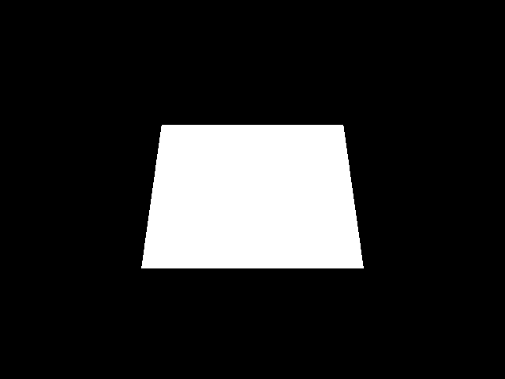 |
Using white for the GetColor Function |
Ray::XLight::getAmbient(), getDiffuse(), getSpecular():
To obtain the ambient, diffuse, and specular color contributions of the lights at the point of intersection.
| 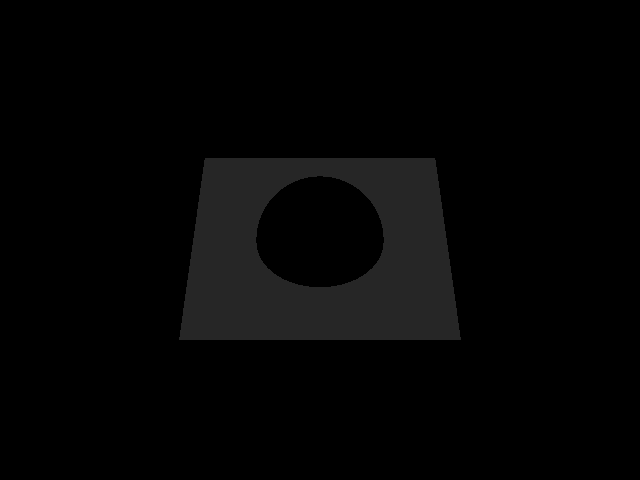 | 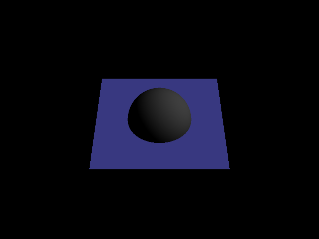 |  |
Emissive and ambient Lighting Effect |
Diffusion Lighting Effect |
Specular Lighting Effect |
Ray::StaticAffineShape::init():
Initialize the local-to-global position transform Ray::StaticAffineShape::_inverseTransform and the local-to-global
normal transform Ray::StaticAffineShape::_normalTransform.
Ray::XLight:isInShadow():
To determine if the point of intersection is in shadow from a particular light source, I created a Ray from
the intersection point to the light source. Then I check if the ray hit anything before reaching the light by utilizing a
local kernel. To avoid the construced ray hitting
itself, I advanced the ray location by Epsilon in
the light's direction.
| 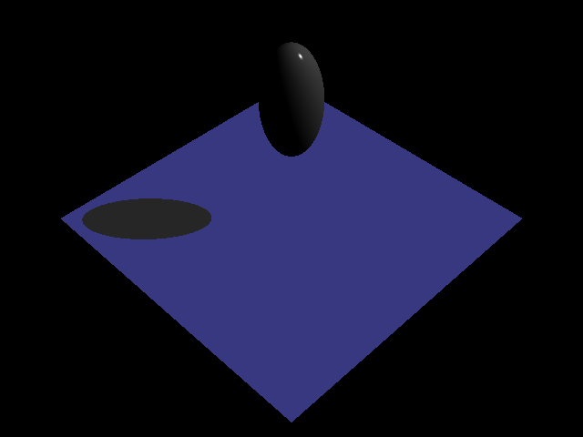 | 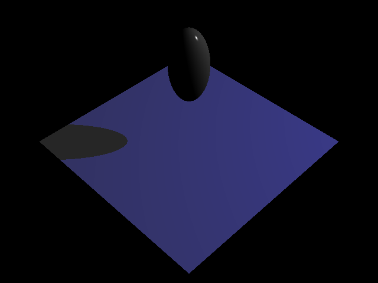 | 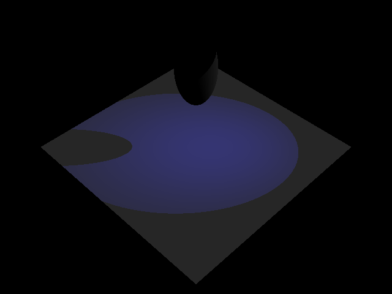 |
Directional Light Source |
Point Light Source |
Spot Light Source |
Ray::Scene::getColor():
To take all the light source into account, we will loop
through all the light source within Scene.
To transform the intersection Information from local
coordinate to the global coordinate, we will multiply
the information with the corresponding transformation
matrix which is stored in spInfo.
Ray::Sphere::processAllIntersections():
This method processes all shapes which intersect the ray within the prescribed range and passing the rFilter test, invoking the rKernel kernel with the intersection information. The processing terminates early if the kernel returns false. The function returns the number of valid intersections.
Ray::Scene::getColor() with Scene::Reflect, Scene::Refract & RayLight::transparency :
To incorprate the reflection and refraction into our get color function, we need to cast the reflected and refracted rays so that we can find the corresponding color. The mathematic dereivation of finding the reflected and refracted ray is shown below:
Reflection:
In the getColor() function, reflection color is only considered when the ray is coming from the outside of the shape.
| 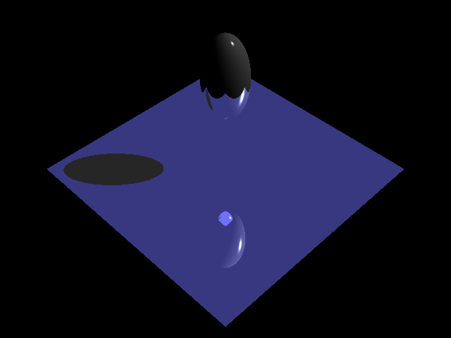 | 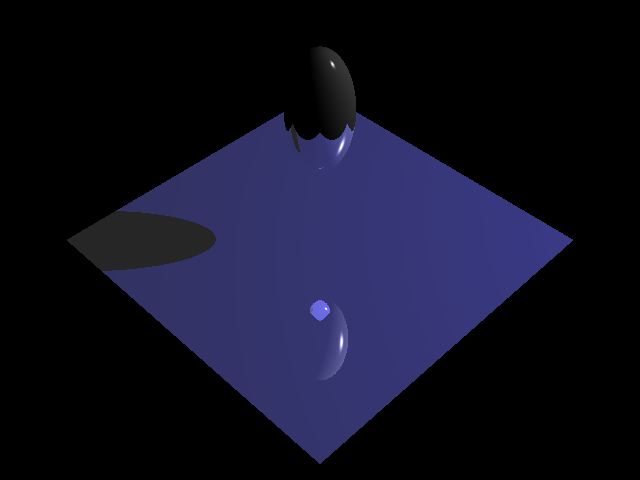 | 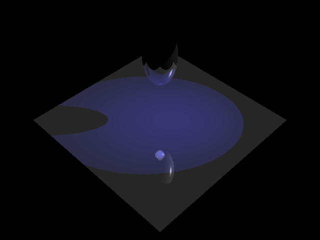 |
Directional Light Reflection |
Point Light Reflection |
Spot Light Reflection |
Transparency:
To implement the transparency and partial shadows, we need to accumulate the transparency along the ray from intersection to the light source. Thus, we need to cast a ray from intersection to a certain length based on the light source. Once the ray hit something along the path, the intersection transparency will be accumulated by multiplication. The the specular and diffusion will be modulated by the transparency. I then modified the getColor() function to recursively cast rays in the transparent direction.
Ray::SphereLight::transparency:
To support the transparency calculation of the sphere light, we need to cast send rays to (uniformly) random positions distributed over the surface of the sphere (with the random number given by the parameter samples) and computing the average transparency over the different rays.
| 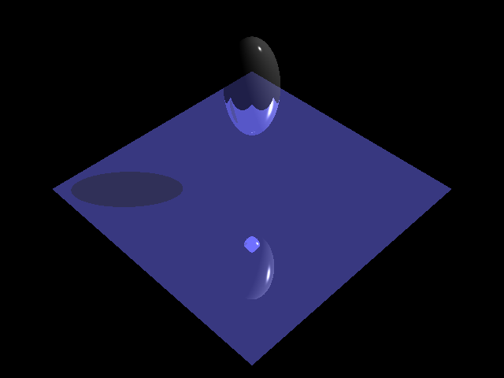 | 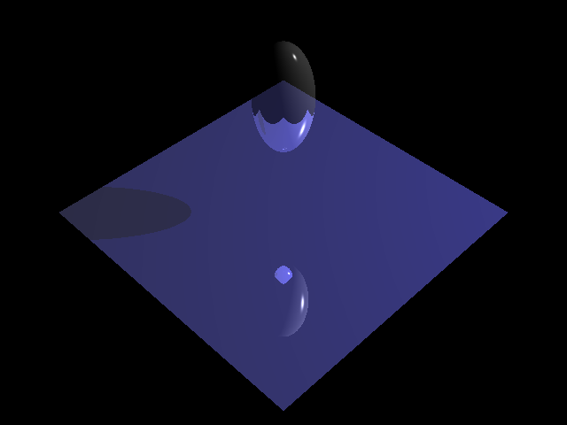 | 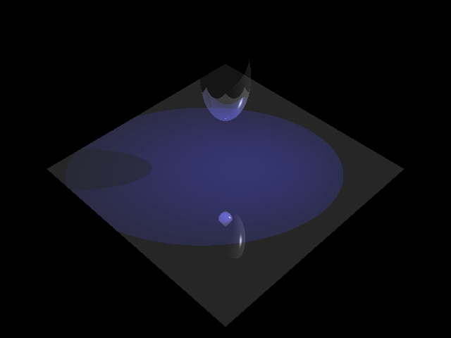 | |
Directional Light Transparency |
Point Light Transparency |
Spot Light Transparency |
Sphere Light Transparency |
Refraction:
Instead of naively cast a ray recursively in transparent direction without any refraction. Scene::Refract is implemented to get the correct refraction direction. Varible K (as in above formula graph) is used to determine if a refraction ray should be generated, if K < 0 then the ray reflects off the surface and does not pass through.
| 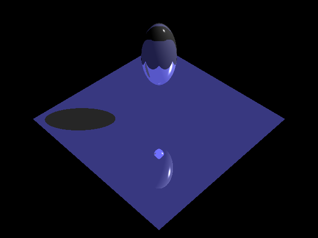 | 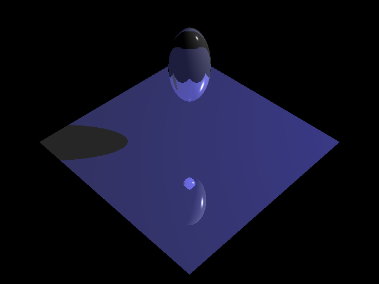 | 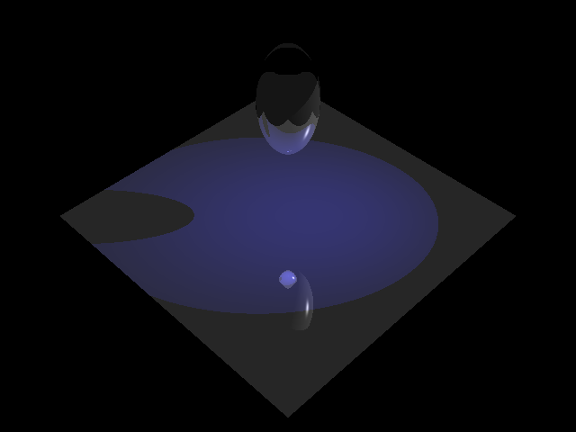 | 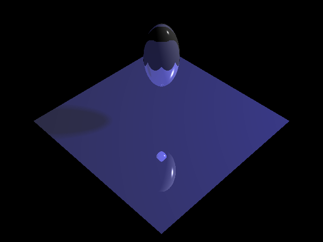 |
Directional Light Refraction |
Point Light Refraction |
Spot Light Refraction |
Sphere Light Refraction |
Ray::Triangle::processFirstIntersection & Ray::Scene::getColor() with texture mapping :
To add texture to the color, we first need to modify
Ray::Triangle::processFirstIntersection to compute the correct texture coordinate. This is very similar to the normal computation, we use the barycentric coordinates of the triangle to calculate the averaged texture coordinate. Once we have the texture coordinate, a bilinear sampling is used to sample the pixel from the texture image and to modulate the contribution of the emissive, ambient, diffuse, and specular terms.
| 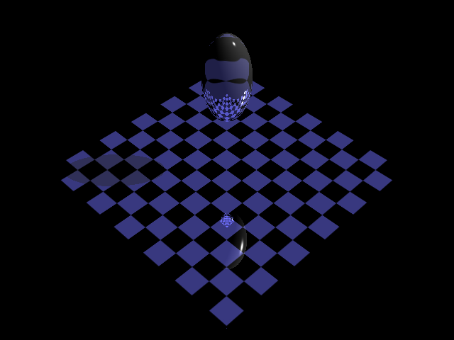 | 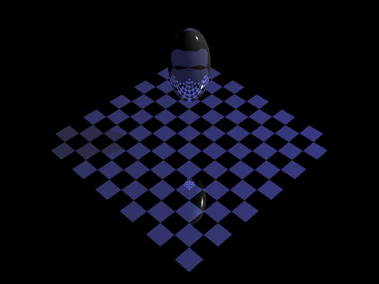 | 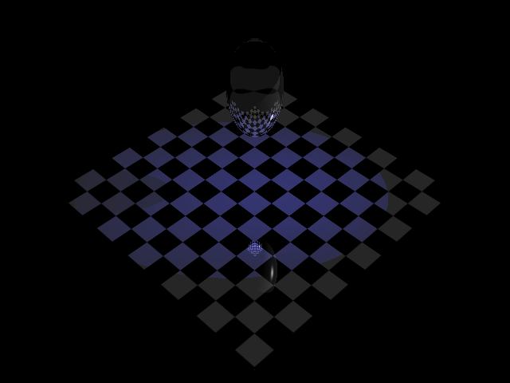 | |
Directional Light with Texture |
Point Light with Texture |
Spot Light with Texture |
Sphere Light with Texture |